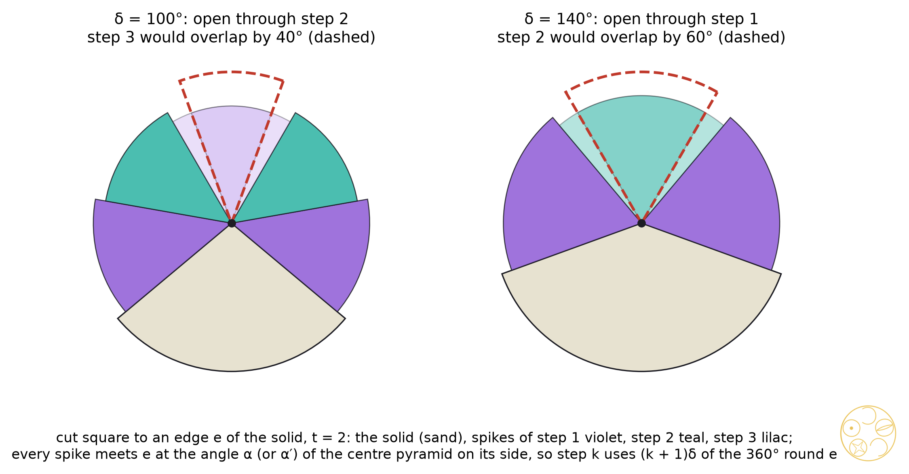
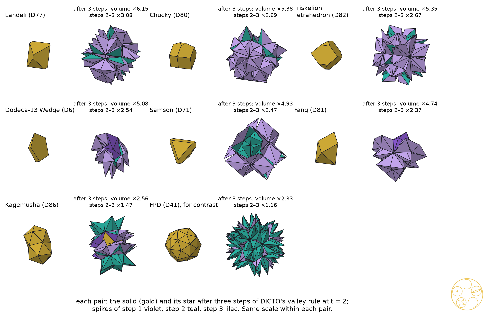
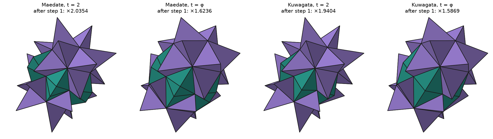

Why DICTO's sharp-edged pieces keep growing while the round stars freeze: the valley law
Put a spike on every face of a solid, then a spike on every face of the spikes, and again. Where two spikes lean towards each other, the valley between them fills up after a few steps. Whether it fills depends on one angle: how sharp the edge under the valley is.
The Star Cores papers follow DICTO's spiked solids. In The Truncated Icosahedron Star (#78) DICTO turned a solid's own face pyramids outwards. Star Cores of DICTO's Solids (#79, paper A) gave every new shape of DICTO Solids that treatment, and then built a second and third star on the first. With the tips straight over the triangles' centres, neighbouring spikes crossed in the valleys at the second step. DICTO proposed shortening the spikes in the valleys and keeping them full on the ridges: his valley rule. With it every run ended without a clash, and the runs split in two. The symmetric shapes froze: at the third step they added almost nothing. Some of DICTO's pieces, the ones he built as parts of a fill rather than as whole symmetric solids, kept growing. Paper A named them and left them to this paper: Lahdeli, Chucky, the Triskelion Tetrahedron, the Dodeca-13 Wedge, Samson, Fang and Kagemusha. Core Cycles (#81, paper B) and The Gains of DICTO's Growth Rule (#80, paper C) dealt with the cores and the hulls of the chain. This paper deals with the eccentric pieces.
We prove a law for one edge of the solid, the valley law, and show that it sorts the growth of all 50 shapes of the valley runs by a single number, the solid's sharpest dihedral angle. The pieces keep growing because they have sharp edges. Symmetry plays no part in it: Samson and the Triskelion Tetrahedron have the full tetrahedral symmetry and keep growing, because their sharpest edges are right angles.
Each piece comes from one of DICTO's papers and is in DICTO Solids v6 with its D-number. Lahdeli (D77) and Sonsam are the two pieces of the twinned octet at its equal-volume point (#56). Chucky (D80) and Fang (D81) are the pieces of the holes of the stacking ABAC, and the Triskelion Tetrahedron (D82) the cubic tetrahedral piece of Samson's family (#57, The Rule of Halves). Samson (D71) is the octet's tetrahedral piece at the Delian bond (#51). The Dodeca-13 Wedge (D6) is one of the two gap pieces of the DICTO Dodeca-13 (#13). Kagemusha (D86, earlier Shadow-17) is two of Johnson's gyroelongated pentagonal pyramids (J11) glued on their pentagons (#62); it is the only non-convex one.
| D | Piece | Symmetry | V, E, F | Dihedral angles δ | Edges δ ≤ 120° | δ ≤ 90° | Open for ever at φ |
|---|---|---|---|---|---|---|---|
| D77 | Lahdeli | D3d | 12, 18, 8 | 70.53°, 109.47° | 18 | 6 | 12 |
| D80 | Chucky | C3v | 19, 30, 13 | 90°, 109.47°, 120°, 144.74° | 24 | 6 | 6 |
| D82 | Triskelion Tetrahedron | Td | 16, 24, 10 | 90°, 125.26° | 12 | 12 | 12 |
| D6 | Dodeca-13 Wedge | C2v | 8, 12, 6 | 10.31°, 85.83°, 91.60°, 107.82°, 108.22° | 12 | 5 | 4 |
| D71 | Samson | Td | 16, 24, 10 | 90°, 125.26° | 12 | 12 | 12 |
| D81 | Fang | C3v | 7, 12, 7 | 70.53°, 109.47° | 12 | 3 | 6 |
| D86 | Kagemusha | D5h | 17, 45, 30 | 138.19°, 201.63° (5 reflex edges) | 0 | 0 | 0 |
Table 1. The seven pieces. Dihedral angles to 0.01°, measured inside the solid. The last three columns count edges: valleys open through step two and step three at t = 2 (Theorem, (d)), and valleys that never close at t = φ.
Let S be a solid with its centre O (the mean of its corners) strictly inside every face plane, cut from O into one pyramid per face. A step puts a spike on every face of the current surface. For a face with the piece Q beneath it (at the first step the centre pyramid, later the spike it belongs to), let A be the point of Q farthest below the face's plane (the mean of such corners if there are several) and A0 the foot of the perpendicular from A to the plane. The spike of height s is the pyramid over the face with tip
A + s (A0 − A),
so s = 1 is flat, and the full spike has s = t, the spike factor: t = 2 mirrors Q's far point in the face, t = φ is the golden spike. At the first step A = O and this is #78's turn. DICTO's valley rule (#79) gives each spike the largest s in [1, t] for which it overlaps no piece already built; then any two new spikes that overlap are both cut back to the largest common s at which they do not. Overlaps are tested by separating axes in float64 (study 2026-10-30-star-cores, star_valley.py). We follow the rule exactly as it was run.
Every face of the solid contributes one triangle per edge to the surface after step one: the side of its spike over that edge. So every edge e of S carries two valley faces, one from each side, and after each later step the spike on a valley face has again exactly one face through e. The valley at e is the open wedge between the two valley faces.
For an edge e between faces f and f′, let α be the angle at e between f and the plane through e and O, and α′ the same on the side of f′. The plane through e and O splits the solid's dihedral angle at e, so δ = α + α′. In the face plane of f, let d be the distance of the plane from O and ρ the signed distance from the foot of O to the line of e (positive when the foot lies on the face's side of e); then α = atan2(d, ρ), which exceeds 90° when the foot of O lies beyond e.
Lemma 1 (the angle of a spike at an edge). Let a face F with piece Q beneath it contain the segment e, and let βQ be Q's dihedral angle at e, between F and the plane through e and A. Then the spike of height s on F has the dihedral angle γ at e with
tan γ = (s − 1) tan βQ,
taken in (0°, 180°), and it lies inside the wedge of angle γ on the far side of F from Q.
Proof. Take coordinates with e on the x-axis and F in the plane z = 0, Q below. Write A0 = (x, y, 0) and A = (x, y, −h) with h > 0; then tan βQ = h/y (with atan2 when y ≤ 0). The tip is A + s(A0 − A) = (x, y, (s − 1)h), so the spike's face through e makes the angle atan2((s − 1)h, y) with F. The spike is the hull of F and a point above F, so it lies in the wedge between F and that face. ∎
Theorem (the valley law). Let S be convex with O strictly inside, e an edge with angles α, α′ and dihedral angle δ = α + α′, and t > 1 the spike factor. Suppose that the spikes on the two valley faces at e were full at steps 1, …, k − 1.
(a) The full spike of step k on f's side meets e at the angle γk with tan γk = (t − 1)k tan α, and likewise γ′k on the side of f′.
(b) Both spikes of step k at e can be full only if
βk = 360° − δ − (γ1 + … + γk) − (γ′1 + … + γ′k) ≥ 0.
If βk < 0, the valley rule shortens at least one of them.
(c) If after some step the two valley faces at e lie in one plane, every later spike on either of them has height zero: the valley is closed for good.
(d) For t = 2, γk = α and γ′k = α′ for every k, so βk = 360° − (k + 1)δ: the two spikes of step k at e can be full only if δ ≤ 360°/(k + 1), that is δ ≤ 120° at step two and δ ≤ 90° at step three, whatever the split of δ into α and α′. For 1 < t < 2 the angles shrink: at t = φ and for α = α′, the valley takes two full spikes at step two if and only if tan²(δ/2) ≤ 4 + 2√5 (δ ≤ 142.08°), at step three if and only if δ ≤ 128.17°, and at every step if and only if δ ≤ 112.20°.
Proof. (a) We find the piece beneath each valley face and apply Lemma 1. At step 1 the face is f itself, Q is the centre pyramid and A = O, so βQ = α and γ1 = atan2((t − 1)d, ρ). At step 2 the valley face is the side T1 of f's spike Q1 over e. The corners of Q1 are those of f and the tip, which lies on T1; so the far point A lies in the plane of f, the plane through e and A is the plane of f, and βQ is Q1's angle at e, which is γ1. At step k ≥ 3 the valley face Tk−1 is the face through e of the tetrahedron Qk−1 with corners the two ends of e and the tips of steps k − 2 and k − 1; its only corner off Tk−1 is the tip of step k − 2, so the plane through e and A is Tk−2 and βQ = γk−1. By Lemma 1 with s = t, tan γk = (t − 1) tan γk−1, and by induction tan γk = (t − 1)k tan α.
(b) Near an inner point of e each piece through e coincides with its dihedral wedge at e. Going round e from the solid, the side of f carries the wedges γ1, …, γk−1 of the earlier full spikes, one after the other (Lemma 1: each spike lies beyond the face it stands on), and the side of f′ the same in the other sense. The two full spikes of step k add γk and γ′k. If the total exceeds 360°, the last two wedges overlap near every inner point of e, so the two full spikes overlap, and the valley rule cuts at least one of them back.
(c) If the two valley faces lie in one plane Π, they are two triangles in Π on the same side of the line e, each with e as an edge, so they overlap in a region of Π next to e. A spike of positive height on one of them reaches beyond Π into the piece standing on the other, near that region, and overlaps it; the valley rule gives it height zero. The face is then kept as it is, and the same holds at every later step.
(d) For t = 2, tan γk = tan α with both angles in (0°, 180°), so γk = α, and βk = 360° − δ − kα − kα′ = 360° − (k + 1)δ. For t = φ and α = α′ = δ/2, write x = tan α and u = t − 1. At step two the condition is γ1 + γ2 ≤ 180° − α. With tan γ1 = ux and tan γ2 = u²x, equality holds when tan(γ1 + γ2) = −x, that is (u + u²)x/(1 − u³x²) = −x, or x² = (1 + u + u²)/u³. For u = 1 this gives x² = 3, α = 60°, δ = 120°, as above; for u = 1/φ it gives x² = φ³(1 + 1/φ + 1/φ²) = 2φ³ = 4 + 2√5, δ = 142.0786°. The left side grows with δ, so the valley is open below this value and closed above it. The bounds 128.1727° (k = 3) and 112.2017° (all k; the series of the γk converges because tan γk ≤ φ−k |tan α|) are the roots of βk = 0, found by bisection to 10−10. ∎
The rule's common cut-back of (b) is what produces the situation of (c): when two valley spikes are cut back only against each other, the largest common height at which they do not overlap is the one at which β = 0, and their faces through e then lie in one plane.

The formula. We rebuilt the valley rule exactly as in #79 for the seven pieces, five shapes for contrast (the Dodeca-13 Needle, the OCD Stella, the FPD, Tweedledum, the GTI) and the three skewed solids D1–D3, whose centre lies beyond some face edges (α > 90°), at t = 2 and t = φ, steps one to three, and measured at every edge of the solid the opening between its two valley faces. Wherever both valley spikes had been full, the measured opening agreed with βk of the theorem to 4.4 × 10−15 rad. No edge with βk < 0 had both spikes full. 676 valleys closed (386 at t = 2, 290 at t = φ), and none grew again.
The count. For all 50 shapes of the valley runs of #79 at both spike factors, every triangle of the surface after step one is a valley face of exactly one edge, so by (b) the number of full spikes at step two is at most twice the number of open edges plus the number of closed ones. This holds in every one of the 100 runs.
The split. Table 2 sorts the 44 convex shapes of the runs by their sharpest dihedral angle δmin. The line at 120° is the line of (d) for step two at t = 2, and it separates the growth exactly.
| Sharpest edge | Shapes | Full spikes at step 2 (t = 2) | Volume added at step 3 (t = 2) | Valleys open for ever at t = φ |
|---|---|---|---|---|
| δmin ≤ 120° | 14 | in every shape | 16.5 to 57.5 per cent | in every shape (3 to 12 edges) |
| δmin > 120° | 30 | none | at most 4.2 per cent; less than 0.1 per cent in 26 | none |
Table 2. The 44 convex shapes of the valley runs of #79 (all with at most 200 faces). Sharp: the Dodeca-13 Wedge (10.31°), Ganesha (58.52°), the Dodeca-13 Needle (60.24°), the three skewed solids D1–D3 (63.43° to 79.19°), Sonsam, Lahdeli and Fang (70.53°), Samson, Ian Dury, Blockhead, Chucky and the Triskelion Tetrahedron (90°). Round: the other 30, from Jubjub (135.52°) to Jabberwock (163.40°); the four that add more than 0.1 per cent are Walrus (4.2), Hatta (3.9), Haigha (2.3) and PHE (0.2). Data: valley-law-predict.json, star-valley.json.
The theorem proves the half of this that concerns the valleys: on a round shape every valley at an edge of the solid closes at step two at t = 2 and is never built on again. That the other faces of the round stars, the ridges and the faces round high corners, also stop growing at step three is observed in the runs, not proved here. On a sharp shape the theorem shows only that the valleys at the sharp edges stay open; that the rule then uses them is again what the runs show.
| Piece | Full spikes, steps 1–3 (t = 2) | Steps 2–3, t = 2 | Step 3, t = 2 | Steps 2–3, t = φ |
|---|---|---|---|---|
| Lahdeli | 8 / 36 / 12 | ×3.08 | ×1.335 | ×1.22 |
| Chucky | 13 / 42 / 24 | ×2.69 | ×1.436 | ×1.59 |
| Triskelion Tetrahedron | 10 / 24 / 0 | ×2.68 | ×1.386 | ×1.15 |
| Dodeca-13 Wedge | 6 / 14 / 12 | ×2.54 | ×1.470 | ×1.73 |
| Samson | 10 / 24 / 24 | ×2.47 | ×1.260 | ×1.19 |
| Fang | 7 / 12 / 0 | ×2.37 | ×1.372 | ×1.56 |
| Kagemusha | 20 / 0 / 5 | ×1.47 | ×1.123 | ×1.79 |
| FPD (contrast) | 60 / 0 / 0 | ×1.16 | ×1.000 | ×1.28 |
Table 3. The valley runs of #79 for the seven pieces and the FPD. Full spikes out of 8, 36, 108 for Lahdeli, and so on (the first count is the number of faces). Volume factors over the step before.
Lahdeli grows most at t = 2. All its edges are 70.53° or 109.47°, both under 120°, so every valley takes full spikes at step two: all 36 spikes of step two are full and the volume more than doubles (×2.31). At step three only its six edges of 70.53° stay open by the law (4 × 70.53° = 282° ≤ 360° < 4 × 109.47°), and exactly 12 spikes are full, two per open edge.
Samson and the Triskelion Tetrahedron have the same dihedral angles, 90° at 12 edges and 125.26° at 12. At step two the law closes the valleys of the 125.26° edges and leaves the 90° ones; both pieces have exactly 24 full spikes, two per right-angled edge. At step three the right angles reach the bound of (d) exactly, 4 × 90° = 360°: the full spikes would just touch. Samson keeps all 24; in the Triskelion Tetrahedron other spikes reach them first, and none of step three is full, yet the step still adds 39 per cent.
Chucky has 6 edges of 90°, 3 of 109.47°, 15 of exactly 120° and 6 of 144.74°. At step two each of its 15 valleys of 120° takes both full spikes, which meet face to face (β2 = 0), so by (c) they are closed for good; the six edges of 144.74° get no full spike; 42 of the 60 spikes are full. At step three none is full, but the step adds 44 per cent.
The Dodeca-13 Wedge has the sharpest edge of all the shapes, 10.31°, the thin edge of the wedge: by (d) its valley could stay open for 33 steps at t = 2. At t = φ it grows most after Kagemusha. Fang has three edges of 70.53° and nine of 109.47°: 12 full spikes at step two, none at step three, but still 37 per cent more volume, from spikes cut back by the rule.
Kagemusha is the exception. It is non-convex: the two J11 meet in five reflex edges of 201.63°, and its other 40 edges are 138.19°. The theorem is stated for convex solids, but its proof uses only the edge and the pieces next to it, and at a reflex edge (b) gives β1 = 360° − 2δ < 0 at t = 2: the valleys at the reflex edges cannot take two full spikes even at step one. In the runs ten faces stay flat at step one, at both spike factors. They stay flat at every step, and the notches never fill:
Corollary (empty notches). Let e be an edge of a solid S with O inside, whose angles α and α′ both exceed 90° (the foot of O lies beyond e in both face planes), and suppose β1 < 0. Then under the valley rule neither face at e ever takes a spike of positive height.
Proof. At step 1 the piece beneath each face is its centre pyramid and A = O, so by Lemma 1 the spike of height s on f meets e at γ(s) = atan2((s − 1)d, ρ) with ρ < 0. As s falls from t towards 1, γ(s) rises from γ1 towards 180°: shortening the spike turns it further over the notch. So for any heights s, s′ in (1, t], γ(s) + γ′(s′) ≥ γ1 + γ′1 = 360° − δ − β1 > 360° − δ, and as in (b) the two spikes overlap near every inner point of e. The rule's common cut-back finds no positive height at which they are clear, and gives both height zero. Each face then keeps its centre pyramid beneath it and its flat partner beside it, so the same holds at every later step. ∎
At a convex edge the opposite holds: ρ > 0, γ(s) falls to 0 as s → 1, and the cut-back always finds a positive height; that is where the growth from cut-back spikes comes from. At Kagemusha's reflex edges tan α = tan α′ = −(3 + √5), α = α′ = 100.81°, and β1 = −43.25° at t = 2 and −55.97° at t = φ; in the runs the ten faces beside them stay flat at all three steps, and the notch stays open at exactly 360° − δ = 158.38°.
Kagemusha grows on its other 20 faces, the two caps (Table 4). Its 40 convex edges of 138.19° split in three ways: ten edges A with α = α′ = 69.09° (tan α = φ²), ten B with 49.79° and 88.40°, and twenty C, each beside a notch face, with 53.64° and 84.55°. At t = 2 no valley can take two full spikes at step two by (d), and none does: the step adds 31 per cent, all from spikes cut back by the rule, as for Fang. At t = φ the law itself leaves the ten A valleys open at step two (138.19° < 142.08°, β2 = +15.25°), and all 20 of their spikes are full. The C valleys are one-sided, since the notch face beside each never takes a spike, and their 20 spikes are full as well; the B valleys (β2 = −11.91°) are cut back. At step three the A valleys close (β3 = −48.19°), and most of the growth is on the ridges of the cap spikes: 60 per cent at t = 2, 93 per cent at t = φ. This is why Kagemusha grows most of all the pieces at t = φ (×1.79 over steps two and three).
| t, step | Volume × | Notch faces | A valleys | B valleys | C valleys | Ridges |
|---|---|---|---|---|---|---|
| 2, step 2 | 1.3115 | 0 | 52.9 % (0 / 20 / 0) | 15.3 % (0 / 20 / 0) | 31.8 % (0 / 9 / 11) | — |
| 2, step 3 | 1.1227 | 0 | 0 | 0 | 39.9 % | 60.1 % |
| φ, step 2 | 1.5045 | 0 | 43.6 % (20 / 0 / 0) | 23.1 % (0 / 20 / 0) | 33.3 % (20 / 0 / 0) | — |
| φ, step 3 | 1.1889 | 0 | 0 | 0 | 6.8 % | 93.2 % |
Table 4. Where Kagemusha's volume goes: share of the volume gained at each step, with full / cut-back / flat spikes in brackets. At step one the 20 cap faces take full spikes and the 10 notch faces none (×1.7405 at t = 2, ×1.4577 at t = φ). The spike volumes add up to the volume gained to 7 × 10−15 (study 2026-11-01-star-cores-d, kagemusha_notches.py).

Under the valley rule Kagemusha's notches stay empty. DICTO proposed two ways to fill them at step one and named the pieces. Maedate (前立, the front crest of a samurai helmet) joins the two crossing notch spikes into one piece: the hull of the two notch faces (a, b, c) and (a, b, c′) and their full tips T and T′, one per notch, an irregular octahedron (6 corners, 8 triangles). Kuwagata (鍬形, the V-shaped horns of the helmet) follows DICTO's sloping-base rule: each notch face keeps a pyramid, but its apex is lowered along the line from c to T until it meets the notch's mirror plane, the plane of the shared pentagon, so the two pyramids meet face to face; the pair is an irregular triangular dipyramid. In every run both pieces lie outside the solid and clear of every other piece. The 20 cap faces take full spikes at step one as before, and steps two and three follow the valley rule unchanged (Table 5, Figure 3).
| Notch rule | t | Step 1 | Step 2 | Step 3 | After three steps | Notch piece volume |
|---|---|---|---|---|---|---|
| valley rule (empty notches) | 2 | ×1.7405 | ×1.3115 | ×1.1227 | 2.563 | 0 |
| Maedate | 2 | ×2.0354 | ×1.3216 | ×1.1368 | 3.058 | 0.2218 |
| Kuwagata | 2 | ×1.9404 | ×1.3102 | ×1.0000 | 2.542 | 2 × 0.0752 |
| valley rule (empty notches) | φ | ×1.4577 | ×1.5045 | ×1.1889 | 2.607 | 0 |
| Maedate | φ | ×1.6236 | ×1.4830 | ×1.1032 | 2.656 | 0.1248 |
| Kuwagata | φ | ×1.5869 | ×1.4521 | ×1.1784 | 2.715 | 2 × 0.0486 |
Table 5. Kagemusha's star with its notches left empty and with DICTO's two notch pieces: volume factors over the step before, the volume after three steps and the volume of the notch piece at each notch, all with Kagemusha's volume taken as 1. Every surface is closed with Euler characteristic 2, and the volumes add up exactly (study 2026-11-01-star-cores-d, kagemusha_variants.py).

Both pieces fill the notches. Maedate makes Kagemusha grow most at t = 2 (×3.058 after three steps, against ×2.563 with empty notches), and its star keeps growing at both spike factors. With Kuwagata at t = 2 the star stops: step three gives ×1.000000000, as the ten spikes still cut back add no volume to nine figures. At t = φ Kuwagata gives the largest star of the three, ×2.715. An analogy, and no more than that: in crystal growth the re-entrant corner between the two halves of a twin is where new layers start most easily, and twinned germanium dendrites grow from such corners (D. R. Hamilton and R. G. Seidensticker, 1960). Maedate and Kuwagata turn Kagemusha's re-entrant edges, where the valley rule lets nothing grow, into places that grow at the first step. Whether the new forms close into a cycle, and with what period, has not been computed.
DICTO proposed his sloping bases for the six convex pieces as well. We used them at their sharp edges, those that the law keeps open through step two (δ ≤ 120° at t = 2, δ ≤ 142.08° at t = φ). At each step, wherever the two full spikes at such an edge would overlap, they are not cut back: as in Kuwagata, each keeps a pyramid over its whole face, with its apex lowered along the line from the face's far corner towards its tip until it meets the bisecting plane of the valley, so that the two meet face to face. The rule applies only where the two apexes coincide and the pyramids are clear of the older pieces; elsewhere the valley rule acts as before. By the law the spikes at these edges do not overlap at steps one and two, so the sloping bases can act only at step three, at t = 2 on the edges between 90° and 120°. There they were needed at 31 valleys, and could be used at one: the edge of the Dodeca-13 Wedge, where the two apexes coincide. At the other 30 the two apexes differ, because the edge's two angles α and α′ are unequal, or the pyramids meet older pieces (Table 6).
| Piece | Sharp edges (t = 2 / φ) | Sloping pairs used / not possible, step 3, t = 2 | Step 3, t = 2 | Steps 1–3, t = 2 | Steps 1–3, t = φ |
|---|---|---|---|---|---|
| Lahdeli | 18 / 18 | 0 / 12 | ×1.3346 | 6.154 | 1.971 |
| Chucky | 24 / 24 | 0 / 3 | ×1.4356 | 5.383 | 2.575 |
| Triskelion Tetrahedron | 12 / 24 | 0 / 0 | ×1.3859 | 5.350 | 1.859 |
| Dodeca-13 Wedge | 12 / 12 | 1 / 6 | ×1.4838 (×1.4701) | 5.128 | 2.793 |
| Samson | 12 / 24 | 0 / 0 | ×1.2600 | 4.934 | 1.922 |
| Fang | 12 / 12 | 0 / 9 | ×1.3720 | 4.743 | 2.519 |
Table 6. DICTO's sloping bases at the sharp edges of the six convex pieces. Volumes relative to each solid. All figures equal those of the valley rule except the Dodeca-13 Wedge at t = 2, step 3 (valley rule in brackets). At t = φ the Triskelion Tetrahedron also has 12 valleys where sloping bases were not possible, and no piece uses one. Every surface is closed with Euler characteristic 2, and the volumes add up to 10−14 (study 2026-11-01-star-cores-d, sloping_six.py).
So no convex piece stops. Sloping bases act where two spikes collide, and the sharp valleys of the convex pieces are exactly the ones where they do not. Kagemusha's notches are the opposite case: there the spikes collide at the first step.
Sources checked (1 November 2026). Reference library (top five hits each): "iterated stellation by adding pyramids on every face repeatedly, growth of a polyhedron" (Messer 1995, Kunnen–Schlicker 1998, Richter-Gebert 2026, Wikipedia "Goldberg polyhedron", Kabai 2010; pages Messer 1995 pp. 1–2, Torquato–Jiao arXiv:1206.3716 p. 21): stellation of face planes, not pyramids built on pyramids; "dihedral angle 120 degrees reflection of a tetrahedron across its face, packing tetrahedra around an edge" (Richter-Gebert 2026, Torquato–Jiao 2009, Sommerville 1922, Wikipedia "Rhombic dodecahedron", Lagarias–Zong 2012; pages Kepler 1619 p. 271, Hynd 2023 p. 28, Frettlöh 2011 p. 1, Koskinen 2011 p. 1, Bianchi–Doná–Speziale 2011 p. 6): the edge-angle count for tetrahedra, no spikes; "Kleetope iterated, augmenting faces with pyramids, self-intersection" (He–Guest 2025, Murphy–Weed 2024, O'Rourke 2010, Bernhard 2026, Kubala 2019; pages Krishnamurthy–Akleman–Subramanian 2020 p. 5, Grünbaum 2010 p. 13, Wikipedia "N-flake" p. 6, Akpanya et al. 2024 pp. 1, 27): nothing on the angle at an edge under repeated pyramids; "reflecting a polyhedron in its faces, mirror images around an edge, dihedral angle condition" (Richter-Gebert 2026, Bochis–Santos 2002, Montejano et al. 2019, Hynd 2023, Wikipedia "Rhombic dodecahedron"; pages Cutler–Schulte 2011 pp. 13, 15, 16, Torquato–Jiao 2009 p. 5, Kepler 1619 p. 271; note Fedorov 1885 ch. 13): nothing on stacked mirror images round an edge. Web (one search, "iterated Kleetope repeated pyramid augmentation of faces self-intersection dihedral angle condition"): D. Eppstein, "On polyhedral realization with isosceles triangles", arXiv:2009.00116 (Graphs and Combinatorics 2021), summary and abstract only; Wikipedia "Triakis tetrahedron" and "Small hexagonal hexecontahedron" (titles only). No source states the valley law.
A spike on a valley face leans on the spike beneath it, and the angle it makes with the solid's edge is the angle of the piece below, stretched by the spike factor. For mirrored spikes it is exactly the angle of the centre pyramid, step after step, so the spikes stack round each edge like copies of the same two wedges, and an edge of dihedral angle δ has room for 360°/δ − 1 steps. A round shape, all of whose edges are blunter than 120°, fills every valley at the second step, and a filled valley never opens again: the star freezes. DICTO's eccentric pieces are not round. Six of them have edges of 90° or less, and their valleys stay open while the round stars stop; the Dodeca-13 Wedge, with its edge of 10.31°, has room for 33 steps. So the pieces keep growing because their edges are sharp, not because their symmetry is low: Samson and the Triskelion Tetrahedron are as symmetric as the tetrahedron. Kagemusha, with no sharp edge but five reflex ones, grows on its caps: under the valley rule its notches stay empty for ever, and its growth is cut-back spikes, the open golden valleys of step two and the ridges of step three. DICTO's notch pieces change this. With Maedate, the conjoined crest, the notches fill and the star grows most at t = 2; with Kuwagata, his sloping bases, the star of mirrored spikes stops growing at step three, so the one non-convex piece also reaches a finished form. Whether a star keeps growing is therefore decided by the solid's sharp edges and notches together with the rule used there: the valley law says which valleys stay open, and the rule at the notches decides whether the star stops. Only Kagemusha was run with the notch pieces. The six convex eccentric pieces keep growing with sloping bases at their sharp edges as well: in the valleys that the law keeps open the spikes do not collide, so there is almost nothing for the sloping bases to replace. Whether sloping bases at their blunter valleys, where the rule cuts spikes back, would stop them is the next test.
Data and code. Study 2026-11-01-star-cores-d: scripts/valley_law.py (part 1: α, α′, δ and βk for every edge of the 50 shapes of the valley runs, with δ checked against the face normals to 10−9; part 2: the valley rule of star_valley.py rebuilt and instrumented for the seven pieces and five contrast shapes at t = 2 and φ; data/valley-law-predict.json, valley-law-run.json, valley-law.log), valley_law_extra.py (the skewed solids D1–D3; valley-law-run-extra.json), figs_paper_d.py (Figures 1 and 2). It imports star_core.py, star_valley.py and figs_paper_a.py of study 2026-10-30-star-cores, whose star-valley.json gives the growth figures. DICTO Solids v6 (dataset concept DOI 10.5281/zenodo.23606967). Run float64.
Sources. DICTO, The DICTO Dodeca-13 (#13), DICTO DOI 10.5281/zenodo.23284281. DICTO, The Delian Bond (#51), DICTO DOI 10.5281/zenodo.23606828. DICTO, Sonsam and Lahdeli (#56), DICTO DOI 10.5281/zenodo.23635823. DICTO, The Rule of Halves (#57), DICTO DOI 10.5281/zenodo.23647898. DICTO, Shadows of the Fourth Dimension (#62), DICTO DOI 10.5281/zenodo.23687223. DICTO, The Truncated Icosahedron Star (#78, v2), DICTO DOI 10.5281/zenodo.23782577. DICTO, Star Cores of DICTO's Solids (#79), DICTO DOI 10.5281/zenodo.23822905. DICTO, The Gains of DICTO's Growth Rule (#80), DICTO DOI 10.5281/zenodo.23822907. DICTO, Core Cycles (#81), DICTO DOI 10.5281/zenodo.23846772. J. C. Lagarias, C. Zong, Notices AMS 59 (2012) 1540–1549. D. Eppstein, arXiv:2009.00116. D. R. Hamilton, R. G. Seidensticker, "Propagation mechanism of germanium dendrites", J. Appl. Phys. 31 (1960) 1165–1168, doi:10.1063/1.1735796.